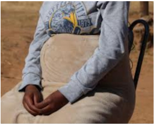

MASERU-In Lesotho abortion is illegal although unsafe practices to terminate conception continue to increase, a threat to the lives of many women and girls. According to the legal instrument, Penal Code 2010 section 45 “A person who does any act bringing about the premature termination of pregnancy in a female person with the intention of procuring a miscarriage, commits the offence of abortion.” Miss Mafumane Tholoana, nurse at Queen Elizabeth II hospital says they would have to sensitize the public especially the young women and girls about the importance of safe abortion. She says the problem is that much as abortion is an illegal practice in this country, some people do practice it. “In fact, we have already embarked on sensitization programs about safe abortion,”Tholoana says.
And these sensitization programs also involve public education about the use of contraceptives so that pregnancy is terminated right at the beginning. She says it is important that a light is torched on the minds of girls because they are the ones usually at the receiving end of unsafe abortion practices. Tholoana says these girls terminate pregnancies and do not even know what to use to clean their bodies. Tholoana says there are a lot of health implications that are brought by the unsafe abortion that could make girls unable to conceive in future when they have families and want to bear children.To address this problem, there should be more public health education programmes out there.
Public Relations officer at Qoaling filter clinic ‘Makhesuoe Khasipe says they admit an abortion patient almost every day. Abortion is done by women from varying child bearing ages ranging from school going children and women who are married. “We have had incidents of married women who would be admitted here after carrying out abortion,” Khasipe says. Based on their experience at the clinic, Khasipe says it seems there is a low public health education about the family planning methods and unmet need for contraception. Khasipe says treating abortion patients is costly though she did not have the financial statements because they have to take them to the theatre. “Sometimes we are betrayed by married men who would promise to take care of us. Unfortunately, these men do not want to use condoms,” *Likeleli Thamae, 23, says.
She says they do not have resources as young girls as some of them are from economically challenged backgrounds. “We know it is wrong to have a relationship with a married man let alone to indulge in unsafe sex,” Thamae says. From the beginning of the relationship Thamae says the men would appear to be caring and sympathetic. She says all hell would break loose when the girl no longer goes on her menstrual periods. “The men would be nowhere to be seen,” she says, adding that their phones would always be on voice mail. Faced with such a scenario, girls would have no option but to terminate pregnancy.
Thamae says the sad reality is that such girls would embark on a mission to find anyone who could terminate their pregnancies. Out of desperation, these women and girls would end up drinking dangerous substances that would land them in health centers. In the era of the COVID- 19 pandemic, there have been a couple of abortion cases reported to the police. Such cases included those of women in wedlock. Lesotho mounted police weekly reports states that the married women have told them that they had been impregnated by men who are not their husbands. Their fear would be that their marriages would be at stake when their husbands discover that they had committed adultery and had borne children. In response to high maternal mortality due to unsafe abortion in Lesotho, the government has been consulting with schools, religious leaders, communities, and civil society involved in health.